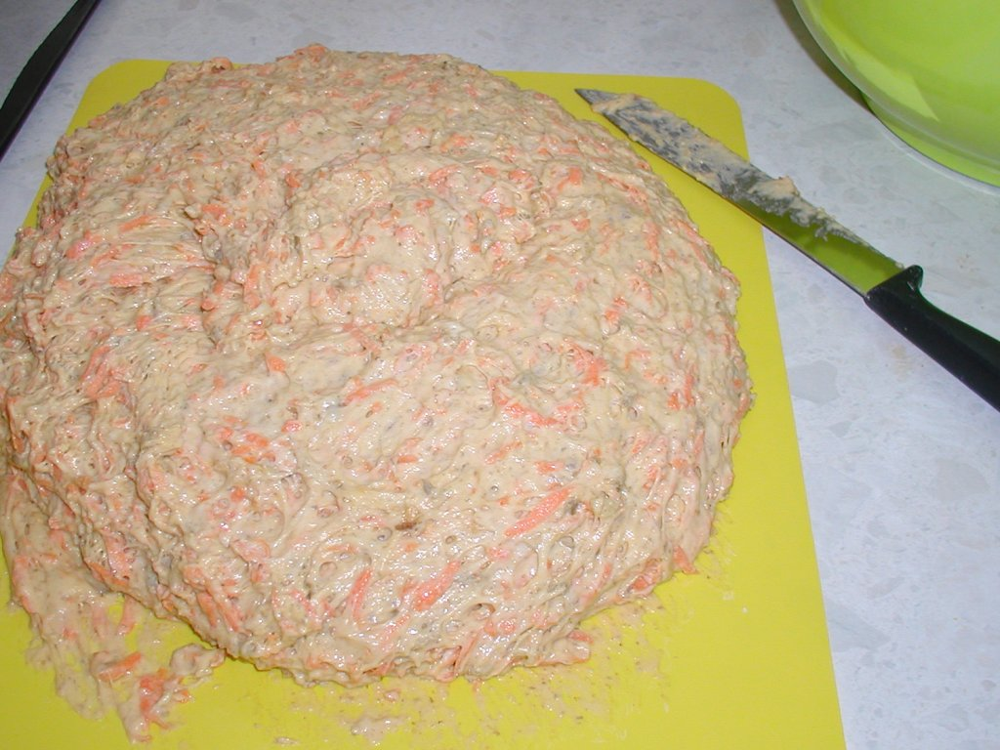
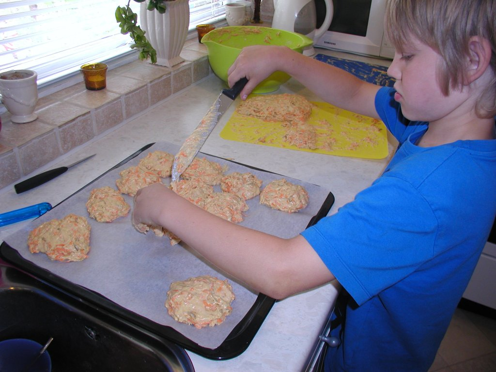
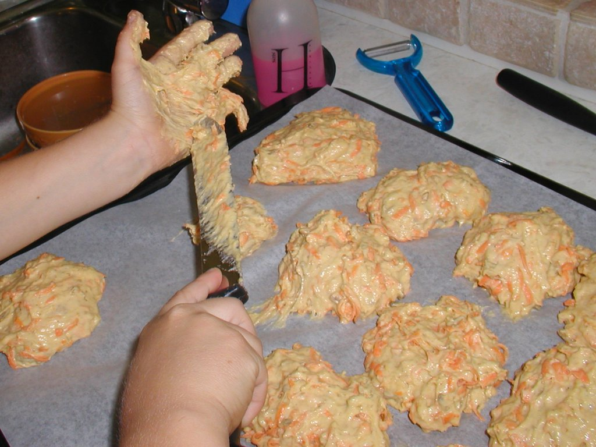
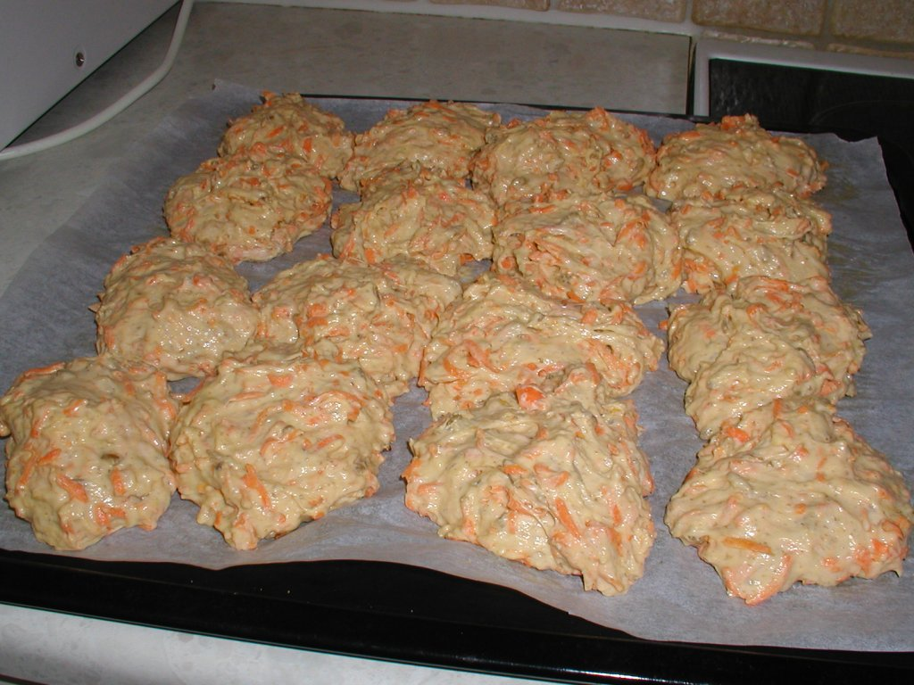
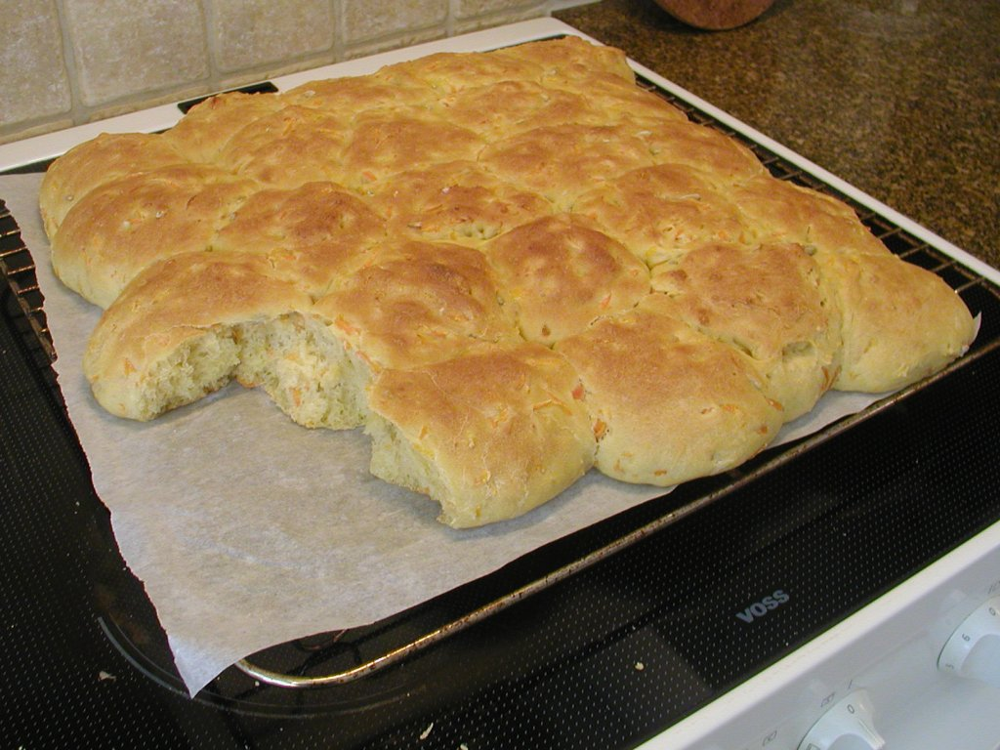

Gulerodsbrud
Tid
Har du travlt?
Gå ikke i panik! Bag et snydebrød i stedet, det er klar til servering på en time! Og der er næsten ingen oprydning.
Um nam nam nam!
Og så er de tilmed rimelig sunde også, pga den store mængde gulerod. Man kan også vælge at rive kartoffel i i stedet for - eller sammen med - det giver en mindre sød, men stadigvæk rigtig fyldig smag.
Se siden om gærbrød generelt for teori, tips og tricks.
Den side, du kigger på lige nu, er mere sådan, gør dét, gør dét, ikke så meget snak ;-)
Ingredienser
Og dejen er for klistret til, at man kan ælte den på bordet!
(Jeg bager altid to plader brud af gangen, derfor tager jeg to skåle.)
Til sammenligning lister jeg den tilsvarende opskrift for boller ved siden af.
Der kan man til gengæld godt have dejen til 2 plader i en skål.
1 plade gulerodsbrud, 16 eller 25 stykLækkerier:
|
2 plader gulerodsboller, 2 x 16 stykLækkerier:
|
Fremgangsmåde
-
Tænd en stegepande på fuldt knald.
Når den er brandvarm, så drys solsikkekernerne ud i ét lag, og sluk med det samme for varmen.
De kan stå og hygge sig, mens du arbejder videre. Vend dem ind i mellem. -
Find en stor røreskål (5 eller 6 L).
Skræl gulerødderne og riv dem ned i skålen. -
Hæld solsikkekerner og tørstoffet i
(mel og salt).
Bland løst med piskeris eller grydeske. -
Vej olien i, dæk det med melet.
(Gæren kan ikke lide at blive fedtet ind.) -
Smuldr gæren i en kop, hæld sukkeret på. Kom en lille bitte smule koldt vand på.
Rør med en gaffel (eller bagsiden af en teske), indtil det bliver tyndt som kakomælk. - Kom den flydende gær i melet.
- Vej vandet i.
-
Ælt!
Brudene:
Dejen til brudene er meget klistret, så i stedet for at sige "aaadd!" og fx prøve at bruge en røreske (eller - fy! - putte ekstra mel i), så jaw hænder i det, og nyd at lade dejen smatte ud og ind imellem fingrene ;-)Bollerne:
Og du bliver bare ved. Det er nu, du skaber konsistensen i brødet! det man kalder "krummen".
Dejen er ganske tør, og du bør kunne ælte den på normal vis.
Nøjes med at bruge venstre hånd, indtil du er sikker på, at der er nok vand i.
Hvis du tror, du er færdig, men ikke er helt sikker, så bliv ved lidt længere, det skader bestemt ikke ;-) -
Hæv første gang i skålen, cirka 30 - 45 minutter under låg eller et (fugtigt) klæde.
Ryd op imens.
-
Sæt dejen på plade(r).
Brudene:
Vend skålen med dej på hovedet på et skærebræt. Den slipper (helt eller delvist) på et tidspunkt...
Så tager du en stor, skarp kniv og snitter/skubber med resolutte tag den næsten flydende dej over, så du kan sætte enten 16 eller 25 klatter på pladen.
Hvis du arbejder for langsomt, så klistrer det mere!
   Bollerne:
Løft dejen over på et skærebræt.
Skær dejen i stykker med en stor skarp kniv. Fold enderne af hvert stykke ind mod sig selv, sådan at en af siderne strækkes og bliver til hele overfladen, og resten er foldet ind på det stykke bollen står på.
Sådan får du pæne runde boller. -
Hæv anden gang på bageplade. Det er ikke nødvendigt at lægge et klæde over.
Dejen skal helst hæve til dobbelt størrelse igen, det tager 30 - 45 minutter.
Ryd op igen.Obs: Det kan være nemmere at gnide indtørret gærdej af skålen, end det er at skylle det af under vandhanen - så vent evt. med at rydde skålen op, med mindre det er meget upraktisk.
-
Bag ved 225°C - midt i ovnen.
Brudene:
Bag i cirka 17 - 20 minutter (det er ligemeget om du har lavet 16 eller 25 styk).Bollerne:
Bag hver plade i 13 - 15 minutter.
Den plade, som du blev færdig med at sætte boller på først, har sikkert hævet mest - så bag den først. -
Træk forsigtigt bagepapiret med brødene på fra bagepladen over på en rist.
25 lækr... Hov! Hvem tog...?
Lad dem køle lidt (mindst 10 - 15 minutter), før du begynder at skære dem.
- Hvis du kan lide hård skorpe, så lad brødene hvile uden noget over.
-
Hvis du vil have en blød skorpe,
så dæk brødene med et viskestykke efter de første 5 minutter.
- Hvis du er kommet til at bage brødene alt for længe, så lad dem køle med plastik over i stedet (evt i en tynd plastikpose), så du holder mest muligt på den sidste fugt.